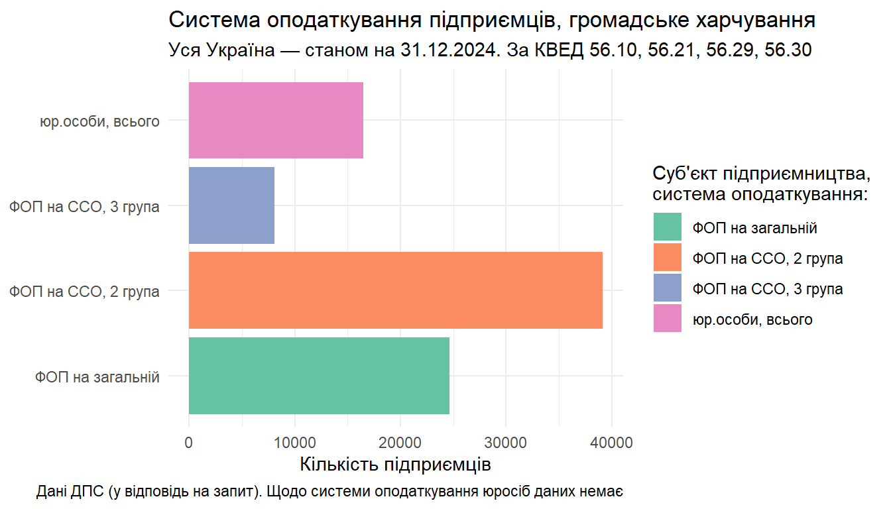
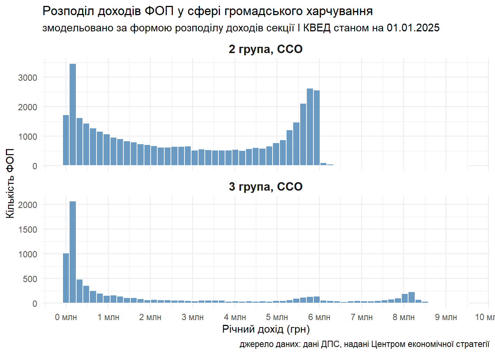
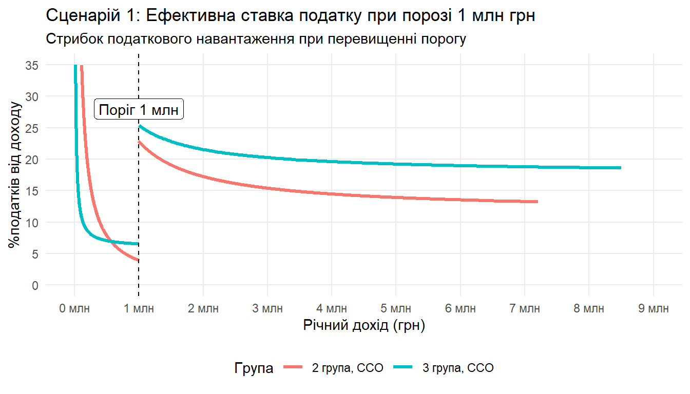
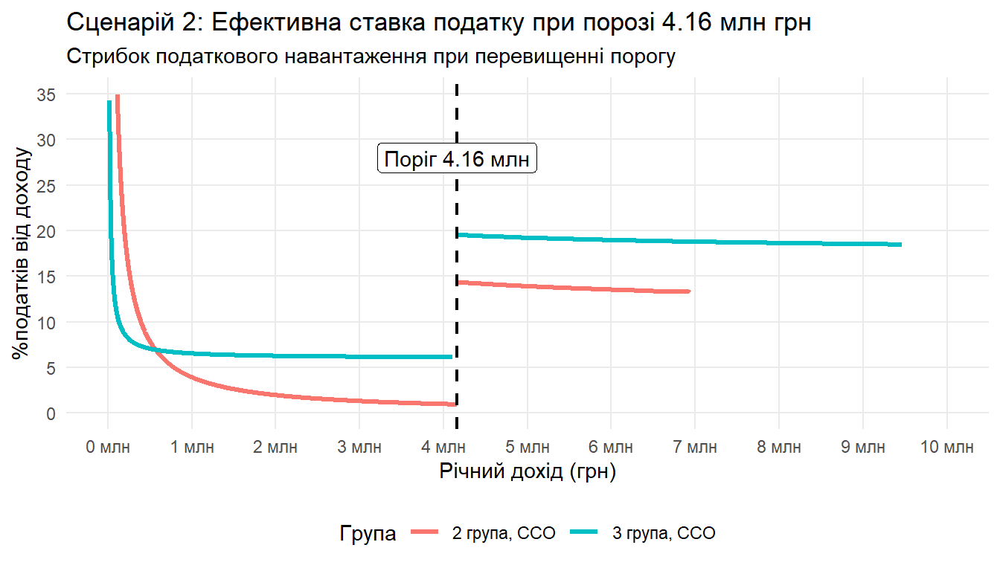

Вплив зміни порогу реєстрації ПДВ на підприємців у сфері громадського харчування
Резюме. Міністерство фінансів пропонує встановити поріг обов’язкової реєстрації ПДВ при перевищенні 1 млн грн доходу на рік для підприємців на спрощеній системи оподаткування (ССО). Ми змоделювали вплив цієї ініціативи на сферу громадського харчування, де зараз працює близько 88 тисяч підприємців, з них — понад 47 тисяч ФОПів на ССО. Розрахунки показують, що “жорсткий сценарій” (ліміт 1 млн грн) підвищить ефективну ставку податку в рази та через низьку маржинальність бізнесу лишить поза точкою безокупності чверть від усіх підприємців сфери. Альтернативний “євроінтеграційний сценарій” (ліміт ~4.16 млн грн) є м’якшим, але без перехідного періоду також виб’є з ринку значну кількість підприємців. В тексті наведені аргументи, чому вирівнювання лімітів має бути поетапним та йти разом зі спрощенням адміністрування системи ПДВ, інакше отримаємо не розширення податкової бази, як очікує Мінфін, а зворотний ефект — перехід у тінь або еміграцію активних громадян.
Зміни від 06 січня 2025. Центр економічної стратегії передав дані з актуальним розподілом доходів підприємців сфери (на зміну нашому припущенню щодо розподілу доходів), внаслідок цього оцінка кількості мікробізнесу, на кого негативно вплинуть зміни при встановленні ліміту у 1 млн грн, знизилася з третини до чверті від усіх підприємців сфери. Поточна редакція тексту викладена вже з врахуванням цих даних. Ключові висновки лишилися незмінними.
В межах досягнутої з МВФ угоди щодо виділення розширеного фінансування, уряд України взяв зобов’язання розширити базу оподаткування, зокрема, прибравши пільгове звільнення від реєстрації ПДВ. У підготованому Міністерством фінансів проєкті Закону України запропоновано досягти цих цілей через вирівнювання порогу реєстрації на рівні 1 млн грн як для платників на загальній, так і на спрощеній системі оподаткування (ССО).
Наразі порогом реєстрації ПДВ для підприємців на ССО виступають відповідні річні ліміти доходу для кожної з груп: у 2025 році це близько 1.4 млн грн для першої групи, 7.2 млн для другої і 10.1 млн — для третьої групи. На прикладі сфери громадського харчування (КВЕД 56, “Діяльність із забезпечення стравами та напоями”) оцінимо потенційний економічний ефект від реалізації різних сценаріїв зміни порогу реєстрації ПДВ.
Сфера громадського харчування: ключова статистика та припущення
Станом на 31 грудня 2024 в Україні 88,325 підприємців надавали послуги із забезпечення стравами та напоями. За даними ДПС, 81.33% або 71,827 цих підприємців діяли як ФОП; з цих ФОП 34.27% перебували на загальній системі оподаткування, решта — на ССО.
Таким чином, на кінець 2024 року маємо 47,210 ФОП, що надавали послуги громадського харчування і перебували на спрощеній системі оподаткування.
Погляньмо на розподіл доходів ФОП на ССО від діяльності у сфері громадського харчування1:

| Група ФОП | Кількість ФОП | Медіанний дохід, млн грн | Кількість ФОП з <1 млн грн доходу | Частка ФОП з <1 млн грн доходу |
| 2 Група, ССО | 39,148 | 2.92 | 11,488 | 29.3% |
| 3 Група, ССО | 8,062 | 2.64 | 4,500 | 55.8% |
Згідно з цією моделлю, медіанний дохід ФОП на 2й групі складає 2.92 млн грн, на 3й — 2.64 млн грн.
Особливістю сфери громадського харчування є низька частка витрат, підтверджених податковими накладними. Це зумовлено купівлею частини продуктів на ринку, або у фермерів-ФОПів, які не є платниками ПДВ; якщо орендодавець є ФОПом, бізнес також не отримає податкового кредиту. Припускаємо, що податковий кредит заклад громадського харчування отримає на 30% свого обороту. Відповідно, ефективна ставка ПДВ складатиме 11.67% від обороту. Виходимо з того, що при перевищенні ліміту бізнес сплачуватиме ПДВ з усього обсягу оподатковуваних операцій. Крім того, адміністрування ПДВ в Україні вимагає професійної підготовки, додамо сюди додаткові адміністративні витрати із частковою залученістю бухгалтера у розрахунку 6,000 грн/місяць, або 72,000 грн/рік .
Важливою характеристикою сфери громадського харчування є еластичність попиту за ціною, коли бізнес не може просто підвищити ціни і не втратити клієнтів. Відповідно, щоби утримати клієнтів, бізнес компенсуватиме частину додаткових витрат за рахунок власного прибутку.
а. Жорсткий сценарій — реєстрація ПДВ при перевищенні річного доходу у 1 млн грн
За жорсткого сценарію ті, хто зараз перебуває на спрощеній системі, при перевищенні ліміту доходів за рік у 1 млн грн мають реєструватися платниками ПДВ і сплачувати ПДВ з усього обсягу оподатковуваних операцій.
Моделювання показує, що при досягненні значення доходу у 1 млн грн, ефективна ставка податку для ФОП 2ї групи зростає з 3.41%, у найнижчій точці на межі до 1 млн грн, до 13.87% - 22.08%: чим більший дохід в межах ліміту спрощеної системи, тим меншою буде ефективна ставка. У випадку 3ї групи ефективна ставка податку піднімається з близько 7% до 18.98% - 25.2% з обороту.
При розрахунку ефективної ставки податків враховуємо ЄП, ЄСВ, військовий збір для відповідної групи спрощеної системи, ефективну ставку ПДВ у розмірі 11.67%, а також додаткові адміністративні витрати на бухгалтера у розмірі 72,000 грн/рік.
Warning: Removed 574 rows containing missing values or values outside the scale range
(`geom_line()`).
Згідно з наведеним розподілом доходів, за цього сценарію у сфері громадського харчування вказані зміни у системі оподаткування вплинуть на діяльність 66.1% підприємців-ФОП на ССО, або понад третину від усіх, хто надає послуги у цій сфері.
У дослідженні Poster за 2023 рік йдеться, що у 63% випадків рентабельність ресторанного бізнесу не перевищує 15%. Зважаючи на еластичність попиту по ціні і вказаний рівень рентабельності бізнесу, підняття ефективної ставки податку призведе до тінізації або закриття близько чверті усіх підприємців, що зараз працюють у сфері — з найбільшим шоком для мікробізнесу.
b. Євроінтеграційний сценарій — сплата ПДВ при перевищенні річного доходу у 4.16 млн грн
При підвищенні порогового значення переходу на ПДВ до 85,000 тис євро (~4.16 млн грн), що відповідає пороговому значенню для реєстрації ПДВ у країнах-членах ЄС, частка підприємців, що підпадуть під вимоги реєстрації та сплати ПДВ становитиме 54.01% для 2ї групи та 74.82% для 3ї групи.
Warning: Removed 571 rows containing missing values or values outside the scale range
(`geom_line()`).
[1] 0.3525736[1] 0.3525736| Група ФОП | % ФОП на ССО, на кого вплинуть зміни | Середня ефективна ставка податку для них% |
| 2 Група | 37.21% | 13.74% |
| 3 Група | 25.79% | 18.87% |
Враховуючи значення рентабельності у сфері, з третини підприємців сфери, яких загалом торкнуться такі зміни, при піднятті середньої ефективної ставки податку до 13.7-18.9%, нижче рівня окупності опиняться близько 10.5 тисяч підприємців, або близько 12% від усіх підприємців, які наразі діють на ринку (незалежно від типу суб’єкту господарювання чи системи оподаткування). Без перехідного періоду та спрощення системи адміністрування ПДВ, таке податкове навантаження означатиме, що вони або переходитимуть у тінь, або будуть ліквідовувати бізнес.
Виходить, що одномоментна реалізація кожного з описаних сценаріїв викличе шок і переформатування ринку. Євроінтеграційний сценарій є менш жорстким, але і він вимагає перехідного періоду для адаптації підприємців до нових правил гри: перебудови ланцюгів постачання продуктів і послуг з фокусом на контрагентах-платниках ПДВ, підняття цін і середньострокової втрати звичної кількості клієнтів.
Висновки
Проблема ухилення від сплати податків через структурування бізнесу за допомогою ФОП чи оформлення найманих працівників як ФОП є актуальною для України, вона дійсно створює нерівні правила гри на ринку та призводить до недоотриманих податкових надходжень; але зниження ліміту до 1 млн грн не вирішить цих проблем — натомість звузить базу оподаткування та спричинить шок для мікробізнесу, посилюючи тенденції до міграції та тінізації діяльності активних громадян.
Footnotes
Маємо доступні дані за секцією ‘I’ КВЕД (“Тимчасове розмiщування й органiзацiя харчування”). Виходимо з того, що доходи від дільності за КВЕД 56, який входить до секції I, розподілені схожим чином.↩︎